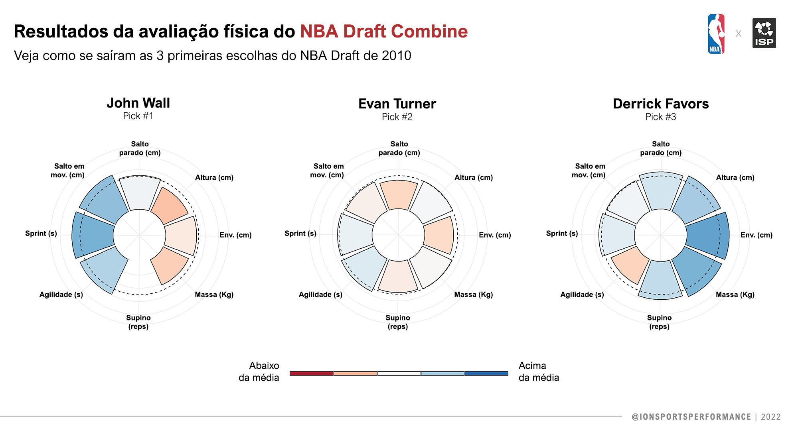

Visualizando os dados
Para visualizar esses dados, utlizaremos um “gráfico de barras circular” que servirá muito bem aos nossos objetivos. Para construir esse tipo de gráfico, vamos utilizar o pacote ggplot2 - que está dentro pacote tidyverse.
Vamos começar a construir o gráfico utilizando apenas os dados de um atleta. Reparem que no código abaixo eu filtro nossos dados pelo nome do atleta que está na primeira linha. Essa mesma função nos servirá depois para olhar os dados de um atleta específico ou de um grupo de atletas.
library(tidyverse)
df %>% filter(Atleta %in% head(x = df$Atleta, 1)) %>%
ggplot() +
geom_col(aes(x = Variavel, y = TS, fill = TS)) +
geom_hline(yintercept = 50, linetype = "dashed")
Ainda parece meio bagun√ßado‚Ķ mas já fizemos alguma coisa. üòÖ
Desenhamos uma linha pontilhada indicando o valor 50. Então já temos que este atleta está um pouco acima da média na maioria das variáveis. Vamos tornar esse gráfico circular utilizando a função coord_polar() e exibir o nome do atleta utilizando a função facet_wrap().
df %>% filter(Atleta %in% head(x = df$Atleta, 1)) %>%
ggplot() +
geom_col(aes(x = Variavel, y = TS, fill = TS)) +
geom_hline(yintercept = 50, linetype = "dashed") +
coord_polar(clip = "off") +
facet_wrap(~Atleta)
Estamos chegando lá! Vamos modificar um pouco esse gráfico dando atenção especial aos limites do eixo Y e as cores que indicam a magnitude to T-Score. Como sabemos que a maior parte dos valores cairá entre 20 e 80 (3 DP), podemos definir esses valores como o limite inferior e superior do eixo, respectivamente.
df %>% filter(Atleta %in% head(x = df$Atleta, 1)) %>%
ggplot() +
geom_col(aes(x = Variavel, y = TS, fill = TS), color = "black") +
geom_hline(yintercept = 50, linetype = "dashed") +
coord_polar(clip = "off", start = .4) +
scale_fill_distiller(palette = "RdBu", direction = 1,
limits = c(30,80)) +
scale_y_continuous(
limits = c(-40, 80),
expand = c(0, 0),
breaks = c(20, 40, 60, 80)
) +
theme_minimal() +
facet_grid(~Atleta) +
theme(
axis.title = element_blank(),
axis.ticks = element_blank(),
axis.text.y = element_blank(),
axis.text.x = element_text(size = 8),
text = element_text(size = 18),
legend.position = "none",
panel.spacing = unit(3, "lines")
)
Agora que construímos o gráfico utilizando as informações de apenas um atleta e de suas características em relação ao grupo avaliado, podemos brincar com as opções de customização do ggplot2 e plotar um grupo de atletas lado a lado. Para fazer isso, basta alterar a primeira linha do gráfico onde utilizamos a função filter() para selecionar o primeiro atleta da tabela. Vamos plotar as 3 primeiras escolhas do NBA Draft de 2010 utlizando essa função (linha baixo) - o código completo do gráfico abaixo você encontra no final desse post.
df %>% filter(Pick %in% c(1:3), Ano == 2010)
Vimos que calcular medidas como o Z-Score e T-Score √© relativamente fácil no R e elas podem ser muito √∫teis para comparar os atletas em rela√ß√£o ao grupo avaliado e detectar os ‚Äúdestaques‚Äù pra cada variável. Ainda, um gráfico de barras circular pode ser facilmente constru√≠do com a fun√ß√£o coord_polar. A partir da√≠, podemos brincar com os diferentes par√¢metros do ggplot2 para criar figuras mais eficientes e intuitivas de acordo com os nossos objetivos. Eu recomendo essa lista de tutoriais que cobre cada aspecto do ggplot2, dependendo tipo de informa√ß√£o que voc√™ quer mostrar. Abaixo está a versão final do gráfico, constru√≠da alterando alguns desses par√¢metros. Bons estudos ü§ì

Código completo do gráfico (clique para ver):
library(forcats) pick.labs = c("Pick #1", "Pick #2", "Pick #3") names(pick.labs) <- c(1,2,3) df %>% filter(Pick %in% c(1:3), Ano == 2010) %>% ggplot() + geom_col(aes(x = Variavel, y = TS, fill = TS), color = "black") + geom_hline(yintercept = 50, linetype = "dashed") + coord_polar(clip = "off", start = .4) + scale_fill_distiller(palette = "RdBu", direction = 1, limits = c(30,70), labels = c("Abaixo da média", " ", " ", " ", "Acima da média")) + scale_y_continuous( limits = c(-40, 80), expand = c(0, 0), breaks = c(20, 40, 60, 80)) + scale_x_discrete(labels=c("Envergadura (cm)" = "Env. (cm)", "Salto em mov. (cm)" = "Salto em \n mov. (cm)", "Salto parado (cm)" = "Salto\nparado(cm)")) + theme_minimal() + facet_wrap(~fct_relevel(Atleta, 'John Wall', 'Evan Turner', 'Derrick Favors') + Pick, nrow = 1, labeller = labeller(Pick = pick.labs)) + guides(fill=guide_legend( label.position = 'bottom', title.position = 'top', keywidth=.7, label.theme = element_text(size = 8, color = "black"), title.theme = element_blank(), keyheight= .10, default.unit="inch", title.hjust = .5, title.vjust = 0, label.vjust = 3, nrow = 1)) + theme( # Removendo os títulos e textos dos eixos axis.title = element_blank(), axis.ticks = element_blank(), axis.text.y = element_blank(), axis.text.x = element_text(size = 6, face = "bold", color = "black", vjust = 2), text = element_text(size = 16), legend.position = "bottom", panel.spacing = unit(3, "lines"), legend.spacing.x = unit(0, 'cm'), plot.background = element_rect(fill = "white", color = "white"), strip.text = element_text(size = 12, vjust = 3, face = "bold"), )## Warning: Removed 1 rows containing missing values (position_stack).